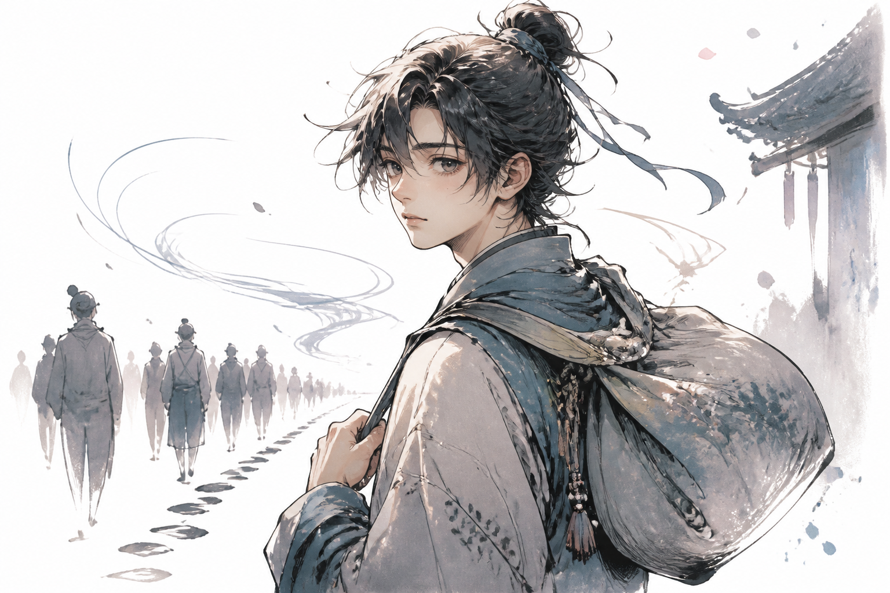
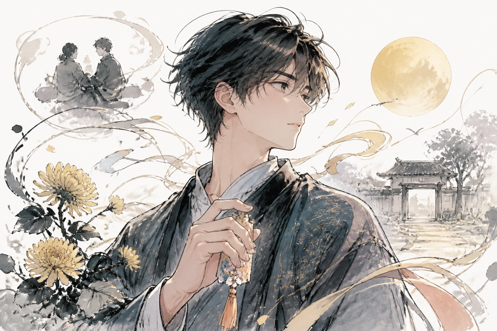
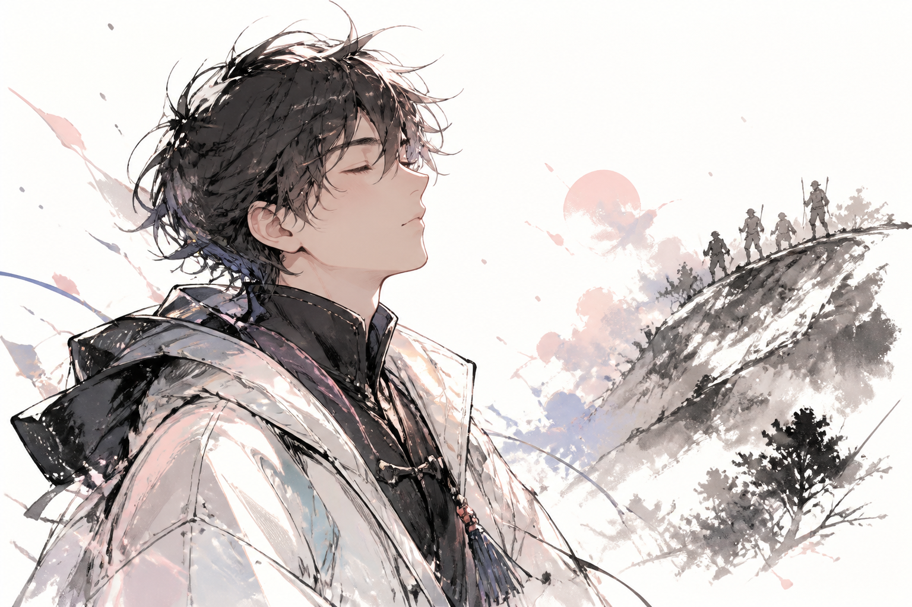
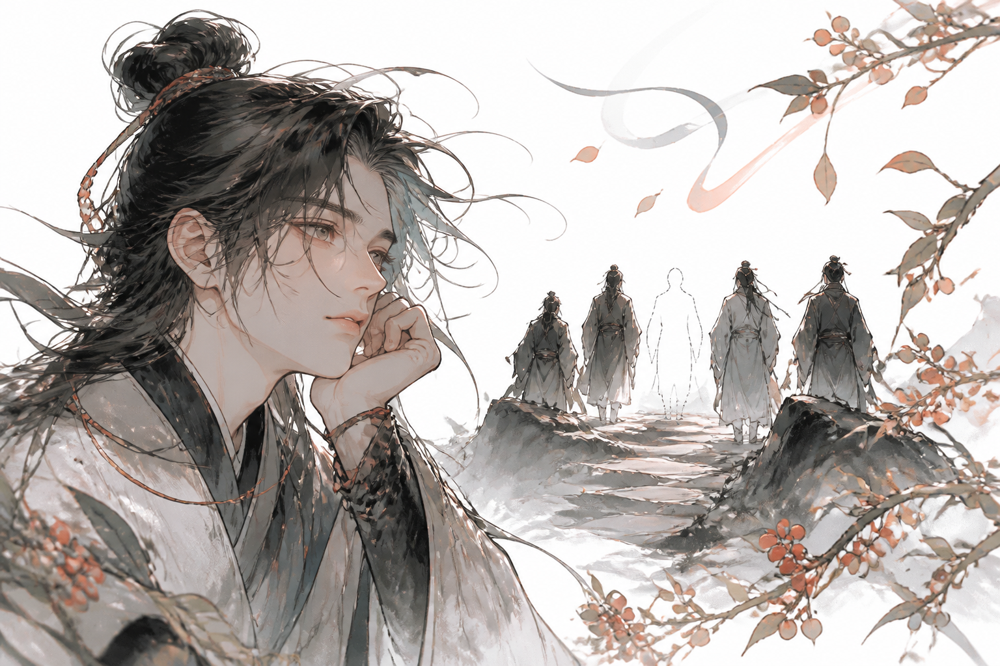

九月九日
憶山東兄弟
唐・王維
獨在異鄉為異客
每逢佳節倍思親
遙知兄弟登高處
遍插茱萸少一人

第一句
動作/狀態地方人物身分
我一個人在外地，不在自己的家鄉。

第二句
時間心情
每到節日，我更想念家人。

第三句
動作/想像人物地方
我想到兄弟們正在登高。

第四句
動作物品心情
大家都插著茱萸，可是少了我。
全詩 / 白話
九月九日憶山東兄弟 唐・王維
獨在異鄉為異客
我一個人在外地，不在自己的家鄉。
每逢佳節倍思親
每到節日，我更想念家人。
遙知兄弟登高處
我想到兄弟們正在登高。
遍插茱萸少一人
大家都插著茱萸，可是少了我。
詩人的心情
離家過節，更想念家人
當時的心情
王維一個人在外地。重陽節到了，他想到家人正在一起過節，心裡很想家。
我們學到
節日讓人想到家人。平常也可以多關心家人，讓愛的人知道：我想你。
互動挑戰
哪一句最能表現「節日時更想念家人」？
句子重組
第一句
第二句
第三句
第四句
背一背
獨在為異客
每逢佳節
遙知登高處
遍插